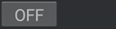

Inter-apps

Settings
 Inter-app settings
Inter-app settings
Inter-app settings offers two ways to interface xDrip+ with other apps: local broadcast (internal to this phone) and web service (internal and external).
Local Broadcast⌁
Broadcast locally will make xDrip+ send internal messages that can be used by other apps like Nightwatch or AAPS.
Broadcast locally 
Enable local broadcast of data so that other apps (e.g.Nightwatch) can listen on new values
If you're using calibration plugins or filtering, you can select to broadcast raw data or filtered/calibrated data.
Send Display Glucose 
Use noise smoothing and plugins etc. (if enabled) for broadcasted value
You can also block noisy data broadcast for safety. By default, only extreme noise level is not broadcasted.
Noise Blocking
Level at which noisy data should not be broadcast as it could confuse receiving apps
Recent apps/phones should accept compatible broadcast. Do not uncheck.
Compatible Broadcast 
Send broadcasts without locking the old permission model
You can specify the identified receiver if you want xDrip+ to send messages only to a specific app. One of the most common use is when xDrip+ is AAPS data source.
Identify receiver
Only send to named package
Receiving from NSClient.⌁
xDrip+ can also receive messages using this feature, you can enable or disable receiving data and treatments from other broadcasting apps.
Accept Glucose
Process glucose data received from NSClient app
Accept Treatments
Process treatment data received from NSClient app
You can enable or disable (disable for AAPS!!!) the sound that plays after updating xDrip+ profile.
Import sounds 
Play sounds when importing significant data such as profiles
Be careful when accepting calibrations from other apps.
Accept Calibrations
Process calibrations received from other apps
Web Service⌁
Original documentation here.
Warning
If you have another app using port 17580 (like Diabox) you should disable this feature.
Note the service is not available as secured http and recent Fitbit apps might not accept data from it.
Web service will open a local web service on your device to allow other devices (smartwatches) and apps to receive data from it.
The web server will respond to requests on address 127.0.0.1 port 17580
xDrip Web Service
Operating a local web server for interacting with Fitbit Ionic etc.
By default the web service is only available to your device, you can open it so that other devices on the network can access it. Make sure you need the feature enabled and understand the security implications. Make sure a Shared Secret is set.
Open Web Service
Accept connections from any network instead of just internally within this device. There are security implications to enabling this! Shared secret will be required if set.
xDrip Web Service Secret
Shared secret for open web service.
Open option⌁
The service has an Open Web Service option. If this is enabled then connections can be made through any network interface instead of being restricted to the loopback on-device network only. Typically enabling this option exposes the wifi / lan / bluetooth pan connection of the device although it is possible that it could be exposed via cellular as well if the carrier supports public ip addressing.
Be very careful enabling this option as there are powerful features accessible, for example the tasker interface. It is best used in conjunction with the Authentication option described below.
Authentication⌁
For safety reason (anybody on the network can access this service) you should protect it with a password, if you have a Nightscout site use your API_SECRET.
If the xDrip Web Service Secret is set to anything other than an empty string (the default) then requests coming in via the open non-loopback networks will have to supply a http header api-secret which contains the SHA1 hash of the same secret password or their connection will be rejected. Rejection information is stored in the Event Log and returned via the http response. The result code 403 (forbidden) is set when a connection is rejected.
Additionally, if a client supplies the api-secret header, then even if the xDrip secret is not set then the request will be rejected. This feature is so that client devices can be assured they are connecting to the correct xDrip instance (by using different secrets). This could be significant when looping for example.
Authentication is not required on the loopback local network interface (127.0.0.1)
api-secret: 915858afa2278f25527f192038108346164b47f2
Above shows http header for password Abc
Nightscout Pebble endpoint⌁
/pebble emulates the same URL on Nightscout, with a watchface which supporting this, you can enter the address on the watchface, for example, Set the data endpoint on Pebble Nightscout watchface to:
http://127.0.0.1:17580/pebble
sgv.json endpoint⌁
/sgv.json emulates /api/v1/entries/sgv.json?count=24 on Nightscout
http://127.0.0.1:17580/sgv.json
The first record will contain a hint as to the units being used, units_hint will be mgdl or mmol to indicate the user's preference but the values will always be sent as mgdl
You can also access the steps endpoint by appending a query parameter
http://127.0.0.1:17580/sgv.json?steps=1234
When doing this look for steps_result number in the first record of the json reply, 200 indicates success, anything else failure to set the steps value. Steps value should be the current cummulative step counter from the device.
You can also access the heart endpoint by appending a query parameter
http://127.0.0.1:17580/sgv.json?heart=123
When doing this look for heart_result number in the first record of the json reply, 200 indicates success, anything else failure to set the heart bpm value. Heart value should be the current bpm now from the device.
You can combine both like a normal query string:
http://127.0.0.1:17580/sgv.json?steps=1234&heart=123
There is another option brief_mode=Y which you can use to exclude some of the data fields from the results to reduce response size.
There is another option no_empty=Y which you can use so that an empty data set returns "" instead of "[]"
There is another option all_data=Y which you can use to get data additionally from the previous sensor session.
There is another option sensor=Y which you can use to get data about sensor age
There is another option collector=Y which you can use to get alert messages from the collector. Nothing will be returned if the message is empty.
You can also access the tasker endpoint by appending a query parameter
http://127.0.0.1:17580/sgv.json?tasker=osnooze
look for tasker_result in the first line of the json reply to indicate success or failure.
OSNOOZE is opportunistic snooze which you can call even when there is no alert playing
SNOOZE is the traditional tasker snooze which will send snooze to followers and uses more cpu
treatments.json endpoint⌁
/treatments.json emulates /api/v1/treatments.json?count=24 on Nightscout
http://127.0.0.1:17580/treatments.json
status.json endpoint⌁
This implements a small subset of the data you might receive from Nightscouts status.json
http://127.0.0.1:17580/status.json
Results look like:
{"thresholds":{"bgHigh":9.4,"bgLow":3.9}}
High and low marks set within the app represented in the local units.
Libre 2 endpoint⌁
/Libre2ConnectCode.json returns Bluetooth unlock buffer and device Mac address.
This is used by whole house.
http://127.0.0.1:17580/Libre2ConnectCode.json
Tasker endpoint⌁
The /tasker endpoint lets you push requests to the tasker interface via http. So a watch face which can only support web based endpoints (eg FitBit) could send a snooze request as below:
http://127.0.0.1:17580/tasker/SNOOZE
Steps endpoint⌁
/steps allows for setting the current step counter data
http://127.0.0.1:17580/steps/set/1234
This should be the current cumulative step counter on the device measuring steps. Not a historical record.
Heart endpoint⌁
/heart allows for setting the current heart rate bpm data
http://127.0.0.1:17580/heart/set/123/1
This should be the current cumulative rate bpm on the device measuring. Not a historical record. The first parameter is BPM and the second is accuracy. If unsure of accuracy parameter just set to 1.
Broadcast Service API⌁
This service allows broadcast of xDrip+ values as an API and can be used by external apps like WatchDrip+ (enable the feature for WatchDrip+).
Broadcast Service API
Enable xDrip communication with third-party applications by using new API
Enable IoB reporting in API
Enable IoB reporting in web service API endpoint used by some smartwatches.
Fetch IoB from Companion App
Fetch IoB value from Companion App running on the same device, such as the Omnipod 5 app .
Google Health connect⌁
You can share information with Google Health.
Google Health Connect
Send and receive data from Google Health Connect and Google Fit
You need Health Connect installed on your device, which is available for Android 8 and above.
Use Health Connect
Required Android 8+ and Google companion application
You can then decide to use incoming and allow outgoing data.
xDrip+ can share steps, heart rate and BG with Google Health.
Get data from Health Connect
Send data to Health Connect